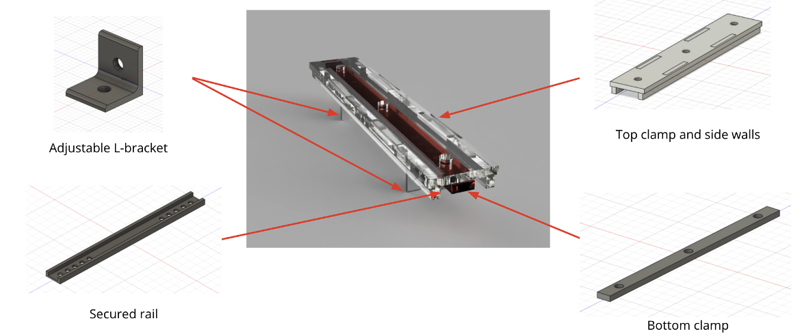
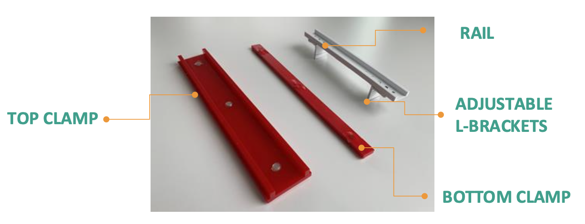
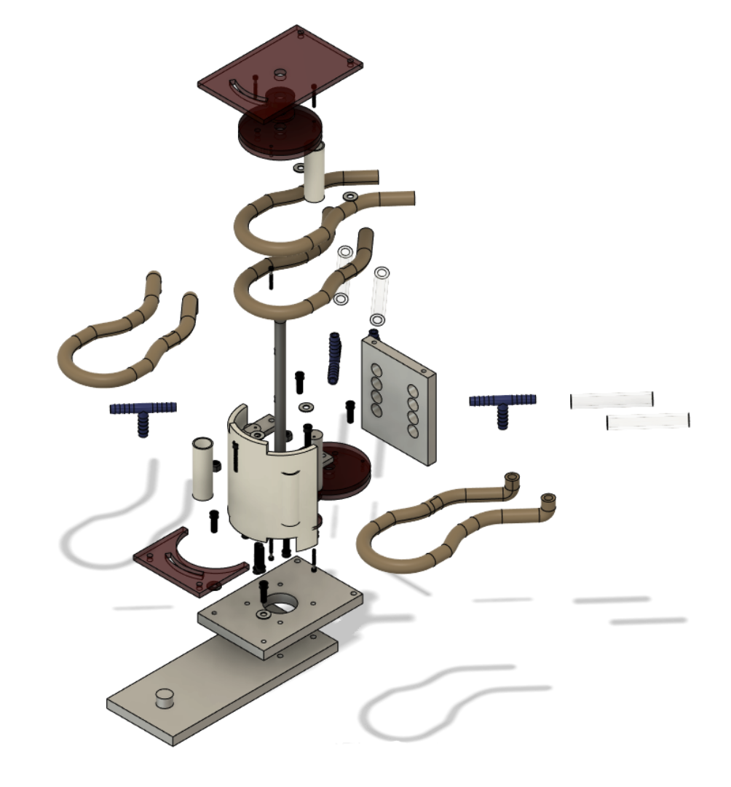

MAE 2250: Mechanical Synthesis is a course for sophomores at Cornell focused on teaching the fundamentals of mechanical design. We had two major projects: designing a water pump that could pump at least 1L/min, and designing a new product to exhibit user-centric design.
My partner and I designed a sewing machine guard rail for sewers to be able to use a sewing machine without the fear of clipping their finger with the needle. This was aimed to help young sewers, sewers with mobility issues, and elderly sewers.
 This was the CAD render of our product.  This was what we actually constructed, after facing a few issues with getting items to arrive on time.We were selected one of the “Best of Design” projects and we got to present our project and demonstrate its use to the class of 175 students!
Myself and 5 other students worked to design and manufacture a peristaltic water pump. The entire project was completed over the course of 3 weeks, with a limited material and budget. I was involved in the assembly of our water pump. Our pump was able to deliver 2.75L in one minute, which was one of the best in our lab section!
 This was the CAD of our product. This was what we actually constructed.
This was what we actually constructed.